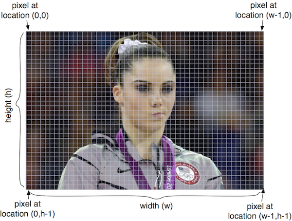

Lecture 7 — Tuples, Modules, and Images¶
Overview¶
- While most of this lecture is not covered in our textbook, this lecture serves as an introduction to using more complex data types like lists.
- We will first learn a simple data type called tuples which allow us to work with multiple values together - including returning two or more values from a function.
- We will then revisit modules, how functions you write can be used in other programs.
- Most of the class we will be learning how to use a new module for
manipulating images.
- We will introduce a new data type - an image - which is much more complex than the other data types we have learned so far.
- We will study a module called pillow which is specifically designed for this data type.
- Class will end with a review for Thursday’s Test 1, so it will be a bit long…
Tuple Data Type¶
A tuple is a simple data type that puts together multiple values as a single unit.
A tuple allows you to access individual elements: first value starts at zero (this “indexing” will turn into a big Computer Science thing!):
>>> x = (4, 5, 10) # note the parentheses >>> print(x[0]) 4 >>> print(x[2]) 10 >>> len(x) 3
As we will explore in class tuples and strings are similar in many ways:
>>> s = 'abc' >>> s[0] 'a' >>> s[1] 'b'
Just like strings, you cannot change a part of the tuple; you can only change the entire tuple:
>>> x[1] = 2 Traceback (most recent call last): File "<stdin>", line 1, in <module> TypeError: 'tuple' object does not support item assignment >>> s[1] = 'A' Traceback (most recent call last): File "<stdin>", line 1, in <module> TypeError: 'str' object does not support item assignment
What are tuples good for?¶
Tuples are Python’s way of making multiple assignments:
>>> 2, 3 (2, 3) >>> x = 2, 3 >>> x (2, 3) >>> a, b = x >>> a 2 >>> b 3 >>> c, d = 3, 4 >>> c 3 >>> d 4
You can write functions that return multiple values:
def split(n): """ Split a two-digit number into its tens and ones digit """ tens = n // 10 ones = n % 10 return (tens, ones) x = 83 ten, one = split(x) print(x, "has tens digit", ten, "and ones digit", one)
outputs:
83 has tens digit 8 and ones digit 3
We can do the reverse, passing a tuple to a function:
def combine(digits): return digits[0] * 100 + digits[1] * 10 + digits[2] d = (5, 2, 7) print(combine(d))
outputs:
527
First Lecture Exercise¶
We will take five minutes and work on the (only) two lecture exercises.
Basics of modules¶
Recall that a module is a collection of Python variables, functions and objects, all stored in a file.
Modules allow code to be shared across many different programs.
Before we can use a module, we need to import it. The import of a module and use of functions within the module have the follow general form:
>>> import module_name >>> module_name.function(arguments)
Area and Volume Module¶
Here are a number of functions from the area calculations we’ve been developing so far, gathered in a single Python file called
lec07_area.py:import math def circle(radius): """ Compute and return the area of a circle """ return math.pi * radius**2 def cylinder(radius,height): """ Compute and return the surface area of a cylinder """ circle_area = circle(radius) height_area = 2 * radius * math.pi * height return 2 * circle_area + height_area def sphere(radius): """ Compute and return the surface area of a sphere """ return 4 * math.pi * radius**2
Now we can write another program that imports this code and uses it:
import lec07_area r = 6 h = 10 a1 = lec07_area.circle(r) # Call a module function a2 = lec07_area.cylinder(r, h) # Call a module function a3 = lec07_area.sphere(r) # Call a module function print("Area circle {:.1f}".format(a1)) print("Surface area cylinder {:.1f}".format(a2)) print("Surface area sphere {:.1f}".format(a3))
We will review this in class.
PIL/PILLOW — Python Image Library¶
PILLOW is a series of modules built around the
Imagetype, our first object type that is not part of the main Python language.- We have to tell Python about this type through
import.
- We have to tell Python about this type through
We will use images as a continuing example of what can be done in programming beyond numbers and beyond text.
See
http://pillow.readthedocs.org/en/latest/handbook/tutorial.html
for more details.
Images¶
An image is a two-dimensional matrix of pixel values.
The origin is in the upper left corner, see below:
Pixel values stored in an image can be:
- RGB — a “three-tuple” consisting of the red, green, and blue values, all non-negative integers.
- L — a single “gray-scale” integer value representing the brightness of each pixel.
Some basic colors:
Color (red, green, blue) value Black (0, 0, 0) Red (255, 0, 0) Green (0, 255, 0) Blue (0, 0, 255) White (255, 255, 255) Light Gray (122, 122, 122)
Some important image modules¶
Imagemodule contains main functions to manipulate images: open, save, resize, crop, paste, create new images, change pixels, etc.ImageDrawmodule contains functions to touch up images by adding text, drawing ellipses, drawing rectangles, etc.ImageFontcontains functions to create images of text for a specific font.- We will only use the
Imagemodule in this lecture.
Our First Image Program¶
We’ll start by working through the following example which you can save as
lec07_images_init.py:from PIL import Image filename = "chipmunk.jpg" im = Image.open(filename) print('\n' '********************') print("Here's the information about", filename) print(im.format, im.size, im.mode) gray_im = im.convert('L') scaled = gray_im.resize((128, 128)) print("After converting to gray scale and resizing,") print("the image information has changed to") print(scaled.format, scaled.size, scaled.mode) scaled.show() scaled.save(filename + "_scaled.jpg")
Image Type and Methods¶
Let us now see some very useful image methods. You need to be very careful with the image functions.
- Some functions do change the image and return nothing.
- Some functions do not change the image and return a value, which is sometimes a new image.
It is crucial that you use each function correctly.
im = Image.open(filename)reads an image with the given filename and returns an image object (which we are associating with the variableim).- Because we only give the file name, and not a more complete path, the Python script and the image must be stored in the same folder.
Images are complex objects. They have associated properties that you can print or use. For example:
>>> im = Image.open('swarm.jpg') >>> im.size (600, 800) >>> im.format 'JPEG' >>> im.mode 'RGB'
You can see that
im.formatandim.modeare strings, whileim.sizeis a tuple. All of these are values associated with an image object.im.show()is a function that displays the image.im.save(filename)saves the image in the given file name.You can create an empty new image with given dimensions using:
Image.new("RGB", (width, height)):>>> im5 = Image.new('RGB', (200, 200)) >>> im5.show()
You can also create a new image by cropping a part of a given image:
>>> im.crop((w1, h1, w2, h2))
which will crop a box from the upper left corner (w1, h1) to the lower right corner (w2, h2).
You can see that the box is entered as a tuple.
The image object
imis not changed by this function, but a new image is returned. So, we must assign it to a new variable.Try this:
>>> im2 = im.crop((100, 100, 300, 400)) >>> im2.show() >>> im.show()
You can get a new image that is a resized version of an existing image. The new size must be given as a tuple
im.resize((width, height)):>>> im3 = im.resize((300, 200)) >>> im3.save('resized.jpg')
im.convert(mode)creates a copy of in image with a new mode - gray scale ('L') in the following example:>>> im4 = im.convert('L') >>> im4.show()
Something new, functions that change an image¶
The functions we have seen so far return a new result, but never change the object that they apply to.
More complex types such as images, often provide methods that allow us to change the object (image) for efficiency reason.
You just have to remember how each function works.
Here is our first function with this property:
im1.paste(im2, (x, y))pastes one image (im2) into the first image (im1) starting at the top left coordinates(x, y). The first image is changed as a result, but not the second one.Note that the second image must fit in the first image starting with these coordinates; otherwise, the pasted image will be cropped.
How we call such a function is different:
>>> im1 = Image.open('sheep.jpg') >>> im1.size (600, 396) >>> im = Image.new('RGB', (600, 396 * 2)) >>> im.paste(im1, (0, 0)) # not assigning the result of paste to a new variable >>> im.show() >>> im.paste(im1, (0, 396)) >>> im.show()
The fact that function
paste()changes an image is an implementation decision made by the designers of PIL, mostly because images are so large and copying is therefore time consuming.Later in the semester, we will learn how to write such functions.
Example 2: Cut and pasting parts of an image¶
This example crops three boxes from an image, creates a new image, and pastes the boxes at different locations of this new image:
from PIL import Image im = Image.open("lego_movie.jpg") w, h = im.size # Crop out three columns from the image # Note: the crop function returns a new image part1 = im.crop((0, 0, w // 3, h)) part2 = im.crop((w // 3, 0, 2 * w // 3, h)) part3 = im.crop((2 * w // 3, 0, w, h)) # Create a new image newim = Image.new("RGB", (w, h)) # Paste the image in different order # Note: the paste function changes the image it is applied to newim.paste(part3, (0, 0)) newim.paste(part1, (w // 3, 0)) newim.paste(part2, (2 * w // 3, 0)) newim.show()
Summary¶
- Tuples are similar to strings and numbers in many ways. You cannot
change a part of a tuple. However, unlike other simple data types,
tuples allow access to the individual components using the indexing
notation
[ ]. - Modules contain a combination of functions, variables, object definitions, and other code, all designed for use in other Python programs and modules.
PILLOWprovides a set of modules that define theImageobject type and associated methods.
Reviewing for the exam: topics and ideas¶
Here are crucial topics to review before the exam:
- Syntax: can you find syntax errors in code?
- Correct variable names, assigning a value to a variable.
- Output: can you predict the output of a piece of code?
- Expressions and operator precedence.
- The distinction between integer and float division.
- The distinction between division (4 // 5) and modulo (4 % 5) operators, and how they work for positive and negative numbers.
- Remember shorthands:
+=,-=,/=,*=. - Functions: defining functions and using them.
- Distinguish between variables local to functions and variables that are global.
- Modules: how to import and call functions that are from a specific
module (
mathandPILare the only ones we have learned so far). - How to access variable values defined in a module (see
math.pifor example). - Strings: how to create them, how to escape characters, multi-line strings.
- How to use
input(): remember it always returns a string. - Boolean data type: distinguish between expressions that return integer/float/string/Boolean.
- Remember the distinction between
=and==. - Boolean value of conditions involving
and/or/not. if/elif/else: how to write them. Understand what parts are optional and how they work.- Remember the same function may work differently and do different things when applied to a different data type.
- Review all about the different ways to call the
print()function for multiple lines of input. - Operators:
+(concatenation and addition),*(replication and multiplication),/,%,**. - Functions:
int(),float(),str(),math.sqrt(),min(),max(),abs(),round(),sum(), etc. - Functions applied to string objects using the dot notation, where
stringis a string object, such as"car"or the name of a string variable:string.upper(),string.lower(),string.replace(),string.capitalize(),string.title(),string.find(),string.count(),len().
- Distinguish between the different types of functions we have learned in this class:
- Functions that take one or more values as input and return something (input objects/values are not modified):
>>> min(3, 2, 1) 1 >>> mystr = 'Monty Python' >>> len(mystr) 12
- Functions that take one or more values as input and return nothing (input objects/values are not modified):
>>> def print_max(val1, val2): ... print("Maximum value is", max(val1, val2)) ... >>> x1 = 10 >>> x2 = 15 >>> print_max(x1, x2) Maximum value is 15
- Functions that apply to an object, like a string, and return a value (but do not modify the object that they are applied to):
>>> mystr = 'Monty Python' >>> mystr.replace('o', 'x') 'Mxnty Pythxn' >>> mystr 'Monty Python' >>> mystr.upper() 'MONTY PYTHON' >>> mystr 'Monty Python'
- Functions that are applied to an object, like an
Imageand modify it (but not return anything), we have only learnedImage.paste()so far (and images will NOT be on the exam):>>> im.paste(im2, (0, 0))
- Local vs. global variables: Can you tell what each of the print statements prints and explain why?
def f1(x, y): return x + y def f2(x): return x + y x = 5 y = 10 print('A:', f1(x, y)) print('B:', f1(y, x)) print('C:', f2(x)) print('D:', f2(y)) print('E:', f1(x))
Reviewing for the exam: problem solving¶
In the remaining time we will go through several practice questions to demonstrate how we approach these problems. While our immediate concern is the exam, you will be developing your problem solving skills and programming abilities. Most of these questions have appeared on previous exams in CS 1.
What is the exact output of the following Python code? What are the global variables, the function arguments, the local variables, and the parameters in the code?
x=3 def do_something(x, y): z = x + y print(z) z += z print(z) z += z * z print(z) do_something(1, 1) y = 1 do_something(y, x)
Write a Python function that takes two strings as input and prints them together on one 35-character line, with the first string left-justified, the second string right-justified, and as many periods between the words as needed. For example, the function calls:
print_left_right('apple', 'banana') print_left_right('syntax error', 'semantic error')
should output:
apple........................banana syntax error.........semantic error
You may assume that the lengths of the two strings passed as arguments together are less than 35 characters.
In the United States, a car’s fuel efficiency is measured in miles driven per gallon used. In the metric system it is liters used per 100 kilometers driven. Using the values 1.609 kilometers equals 1 mile and 1 gallon equals 3.785 liters, write a Python function that converts a fuel efficiency measure in miles per gallon to the one in liters per 100 kilometers and returns the result.
Write a program that reads Erin’s height (in cm), Erin’s age (years), Dale’s height (in cm) and Dale’s age (years) and tells the name of the person who is both older and taller or tells that neither is both older and taller.